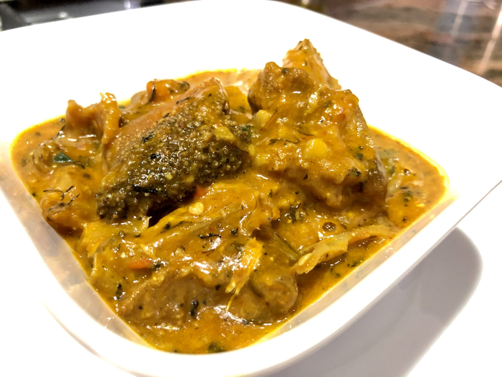

Ogbono soup is a popular Nigerian delicacy enjoyed across the country. it's a viscous soup prepared with fish and proteins and it's also served with "Swallow". it's made from the seeds of the ogbono fruit, typically dried in the sun, ground, and sold in powdered form or whole. its highly mucilaginous component thickens in soups is what most people enjoy.
Ogbono seed, ogiri okpei, stockfish head, ponmo, sharki, beef, fresh pepper or 2 tbsp. dry pepper, snails, crayfish, salt, seasoning cubes, onion, palm oil, ugu (pumpkin leaves)
Place the Ogbono and ogiri in the dry mill of your blender and grind into a smooth powder. Set this aside. Soak the stockfish in hot water and shred - Set this aside. Chop the ugu - Set this aside
In a medium-sized pot, place the meats: sharki, ponmo, beef
snails in the pot. Add your chopped onion, crushed seasoning, salt to taste. Cover the pot and leave the meats to cook in its juices for 5-10 minutes. This ensures the seasoning gets into the meat. Add water and cook for 30minutes. Remove the beef and snail so they don't get overcooked. Add the stockfish into the pot and cook alongside the sharki and ponmo for extra 20 minutes. Heat up palm oil in an empty pot for 30 secs and Add pepper. Stir fry for 2 minutes.
Turn down the heat from the burner and add the ogbono. Stir on very low heat for 30 secs then add the meat stock. Mix well. Add water into the pot. If you want it to be very thick, add little water. if you don't want the soup to be too thick, add water as desired. Here's the tricky part. If you're sure you're using the real ogbono, you can cover your pot. If you're using Ugiri (An ogbono substitute), DON'T COVER YOUR POT else the soup will lose its viscosity. Once the ogbono thickens, Add the crayfish and cooked proteins into the pot. Mix to combine, then add your chopped vegetables. Leave to simmer for 2 minutes on low heat then turn off your burner and your ogbono is ready. Serve with your favorite swallow. Enjoy!